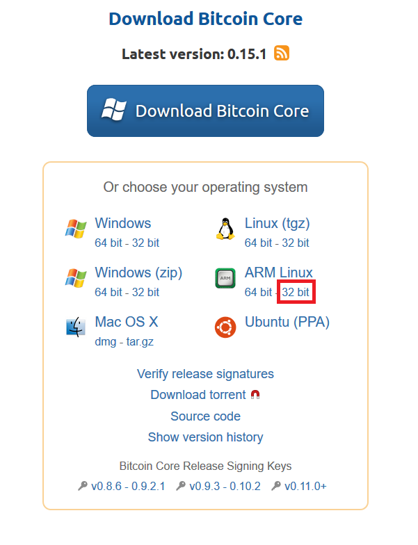
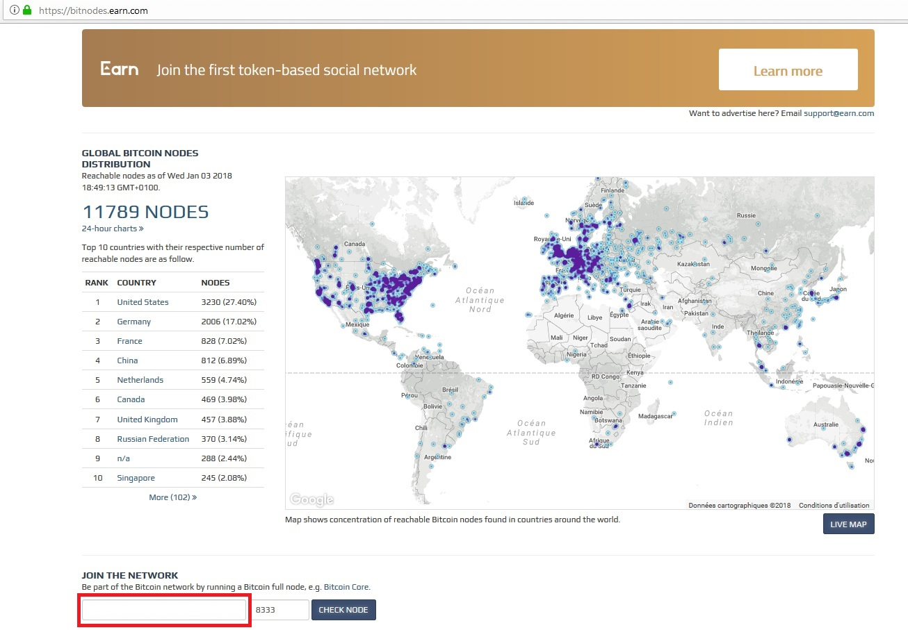
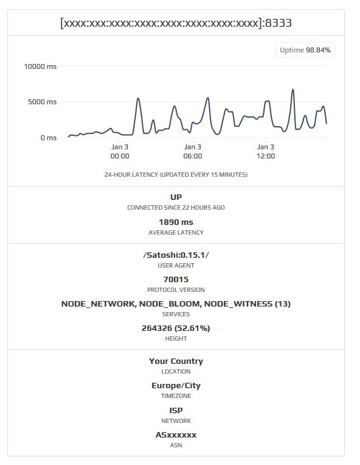

Installing bitcoind on raspberry pi
Installing bitcoind on linux
Running a full bitcoin node helps the bitcoin network to accept, validate and relay transactions. If you want to volunteer some spare computing and bandwidth resources to run a full node and allow Bitcoin to continue to grow you can grab an inexpensive and power efficient raspberry pi and turn it into a full node.
There are plenty of tutorials on the Internet explaining how to install a bitcoin full node; this tutorial won't go over setting up a raspberry pi and using ssh.
In order to store the full blockchain we will mount a network drive and tell bitcoind to use this mapped drive as the data directory.
Download the bitcoin client
Go to https://bitcoin.org/en/download

Copy the URL for the ARM 32 bit version and download it onto your raspberry pi.
wget https://bitcoin.org/bin/bitcoin-core-0.15.1/bitcoin-0.15.1-arm-linux-gnueabihf.tar.gz
Locate the downloaded file and extract it using the arguement xzf
tar xzf bitcoin-0.15.1-arm-linux-gnueabihf.tar.gz
a new directory bitcoin-0.15.1 will be created, it contrains the files we need to install the software
Install the bitcoin client
We will install the content by copying the binaries located in the bin folder into /usr/local/bin by using the install command. You must use sudo because it will write data to a system directory
sudo install -m 0755 -o root -g root -t /usr/local/bin bitcoin-0.15.1/bin/*
Launch the bitcoin core client by running
bitcoind -daemon
Configuration of the node
Start your node at boot
Starting you node automatically at boot time is a good idea because it doesn't require a manual action from the user. The simplest way to achive this is to create a cronjob.
Run the following command
crontab -e
Select the text editor of your choice, then add the following line at the end of the file
@reboot bitcoind -daemon
Save the file and exit; the updated crontab file will be installed for you.
Full Node
If you can afford to download and store all the blockchain, you can run a full node. At the time of writing, the blockchain is 150Go (https://blockchain.info/fr/charts/blocks-size). Tree ways to store this are : * use a microSD with 256Go or more * add a thumbdrive or an external drive to your raspberry pi * mount a network drive from a NAS
If you have purchased a big SD card then you can leave the default location for the blockchain data (~/.bitcoin/). Otherwise, you will have to change the datadir location to where your drive is mounted (in my case I have mounted it to /mnt)
In order to configure your bitcoin client, edit/create the file bitcoin.conf located in ~/.bitcoin/
nano ~/.bitcoin/bitcoin.conf
copy the following text
# From redoules.github.io
# This config should be placed in following path:
# ~/.bitcoin/bitcoin.conf
# [core]
# Specify a non-default location to store blockchain and other data.
datadir=/mnt
# Set database cache size in megabytes; machines sync faster with a larger cache. Recommend setting as high as possible based upon mach$
dbcache=100
# Keep at most <n> unconnectable transactions in memory.
maxorphantx=10
# Keep the transaction memory pool below <n> megabytess.
maxmempool=50
# [network]
# Maintain at most N connections to peers.
maxconnections=40
# Tries to keep outbound traffic under the given target (in MiB per 24h), 0 = no limit.
maxuploadtarget=5000
Check https://jlopp.github.io/bitcoin-core-config-generator it is a handy site to edit the bitcoin.conf file
Pruning node
If you don't want to store the entire blockchain you can run a pruning node which reduces storage requirements by enabling pruning (deleting) of old blocks.
Let's say you want to allocated at most 5Go to the blockchain, then specify prune=5000 into your bitcoin.conf file. Edit/create the file bitcoin.conf located in ~/.bitcoin/
nano ~/.bitcoin/bitcoin.conf
copy the following text
# From redoules.github.io
# This config should be placed in following path:
# ~/.bitcoin/bitcoin.conf
# [core]
# Set database cache size in megabytes; machines sync faster with a larger cache. Recommend setting as high as possible based upon mach$
dbcache=100
# Keep at most <n> unconnectable transactions in memory.
maxorphantx=10
# Keep the transaction memory pool below <n> megabytess.
maxmempool=50
# Reduce storage requirements by only storing most recent N MiB of block. This mode is incompatible with -txindex and -rescan. WARNING: Reverting this setting requires re-downloading the entire blockchain. (default: 0 = disable pruning blocks, 1 = allow manual pruning via RPC, greater than 550 = automatically prune blocks to stay under target size in MiB).
prune=5000
# [network]
# Maintain at most N connections to peers.
maxconnections=40
# Tries to keep outbound traffic under the given target (in MiB per 24h), 0 = no limit.
maxuploadtarget=5000
Checking if your node is public
one of the best way to help the bitcoin network is to allow your node to be visible and to propagate block to other nodes.
The bitcoin protocole uses port 8333, other clients should be able to share information with your client.
Run
ifconfig
and check if you have an ipv6 adresse (look for adr inet6:)
IPV6
Get the global ipv6 adresse of your raspberry pi
Link encap:Ethernet HWaddr xx:xx:xx:xx:xx:xx
inet adr:192.168.1.x Bcast:192.168.1.255 Masque:255.255.255.0
adr inet6: xxxx::xxxx:xxxx:xxxx:xxxx/64 Scope:Lien
adr inet6: xxxx:xxx:xxxx:xxxx:xxxx:xxxx:xxxx:xxxx/64 Scope:Global
UP BROADCAST RUNNING MULTICAST MTU:1500 Metric:1
RX packets:42681744 errors:0 dropped:0 overruns:0 frame:0
TX packets:38447218 errors:0 dropped:0 overruns:0 carrier:0
collisions:0 lg file transmission:1000
RX bytes:3044414780 (2.8 GiB) TX bytes:2599878680 (2.4 GiB)
it is located between adr inet4 and Scope:Global
adr inet6: xxxx:xxx:xxxx:xxxx:xxxx:xxxx:xxxx:xxxx/64 Scope:Global
Copy this adresse and past it into the search field on https://bitnodes.earn.com/

If your node is visible, it will appear on the website

IPV4
If you don't have an ipv6 adresse, you will have to open port 8333 on your router and redirect it to the internal IP of your raspberry pi.
It is not detailed here because the configuration depends on your router.